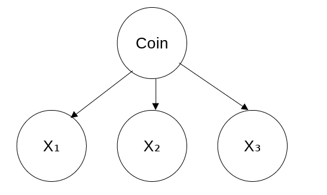
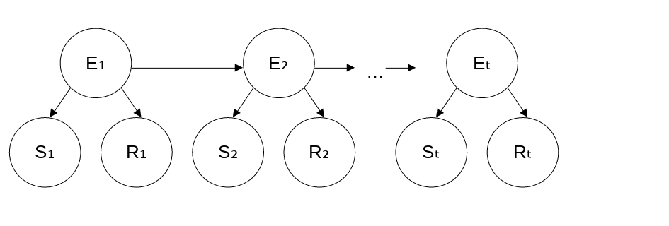
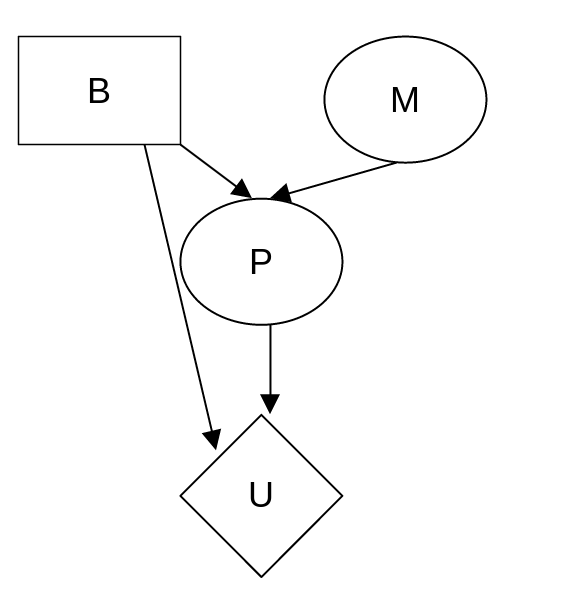

A cryptarithmetic problem. Each letter stands for a distinct digit; the aim is to find a substitution of digits for letters such that the resulting sum is arithmetically correct, with the added restriction that no leading zeroes are allowed. (b) The constraint hypergraph for the cryptarithmetic problem, showing the Alldiff constraint (square box at the top) as well as the column addition constraints (four square boxes in the middle). The variables C1, C2, and C3 represent the carry digits for the three columns.")
author: niplav, created: 2021-01-21, modified: 2021-03-27, language: english, status: in progress, importance: 2, confidence: likely
“Artificial Intelligence: A Modern Approach”, written by Stuart Russell and Peter Norvig, is probably the most well-known textbook on artificial intelligence. Here, I write down my solutions to exercises in that book. I use the 2010 edition, because the exercises for the 2020 edition were moved online.
Define in your own words: (a) intelligence, (b) artificial intelligence, (c) agent, (d) rationality, (e) logical reasoning
The word “intelligence” is mostly used to describe a property of systems. Roughly, it refers to the ability of a system to make decisions that result in consequences are graded high according to some metric, as opposed to decisions that result in consequences that are graded low according to that metric.
“Artificial intelligence” refers to systems designed and implemented by humans with the aim of these systems displaying intelligent behavior.
An “agent” is a part of the universe that carries out goal-directed actions.
The usage of the word “rationality” is difficult to untangle from the usage of the word “intelligence”. For humans, “rationality” usually refers to the ability to detect and correct cognitive errors that hinder coming to correct conclusions about the state of the world (epistemic rationality), as well as the ability to act on those beliefs according to ones values (instrumental rationality). However, these seem very related to “intelligence”, maybe only being separated by a potentiality–intelligence being the potential, and rationality being the ability to fulfill that potential. One could attempt to apply the same definition to artificial intelligences, but it seems unclear how a lawful process could be more intelligent, but is not.
“Logical reasoning” refers to the act of deriving statements from other statements according to pre-defined rules.
A reflex action is not intelligent, as it is not the result of a deliberate reasoning process. According to my personal definition above (and also the definition given in the text), it is also not rational (since the action is not guided by a belief).
Common usage of the term “rational” indicates that people would describe this reflex as a rational action. I believe this is fine, and words are just pointers to clusters in thing-space anyway.
Suppose we extend Evans’s ANALOGY program so that it can score 200 on a standard IQ test. Would we then have a program more intelligent than a human? Explain.
No. (At least not for any useful definition of intelligence). IQ tests as they currently exist measure a proxy for the actual ability to perform complex tasks in the real world. For humans, geometry puzzles correlate (and predict) well with such tests (Sternberg et al. 2001).
However, this proxy breaks down once we start optimising for it (as in the case on extending ANALOGY). We can now not predict real-world performance on arbitrary goals given the result of the IQ test performed on ANALOGY anymore.
The neural structure of the sea slug Aplysia has been widely studied (first by Nobel Laureate Eric Kandel) because it has only about 20,000 neurons, most of them large and easily manipulated. Assuming that the cycle time for an Aplysia neuron is roughly the same as for a human neuron, how does the computational power, in terms of memory updates per second, compare with the high-end computer described in Figure 1.3?
Given the cycle time of $10^{-3}$ seconds, we can expect
which is seven orders of magnitude lower than a supercomputer. Aplysia won't be proving any important theorems soon.
Suppose that the performance measure is concerned with just the first T time steps of the environment and ignores everything thereafter. Show that a rational agent’s action may depend not just on the state of the environment but also on the time step it has reached.
Example: Let's say that we are in an environment with a button, and pressing the button causes a light to go on in the next timestep. The agent cares that the light is on (obtaining 1 util per timestep the light is on for the first T timesteps).
However, pressing the button incurs a cost of ½ on the agent.
Then, at timestep T, the agent will not press the button, since it does
not care about the light being on at timestep T+1, and wants to avoid
the cost ½. At timesteps $<T$ it will press the button, with the light
currently being on, at timestep T it will not press the button, under
the same environmental conditions.
For each of the following assertions, say whether it is true or false and support your answer with examples or counterexamples where appropriate.
a. An agent that senses only partial information about the state cannot be perfectly rational.
False. An agent that senses only partial information about the state could infer missing information by making deductions (logical or statistical) about the state of the environment, coming to full knowledge of the environment, and making perfectly rational choices using that information.
For example, a chess-playing agent that can't see exactly one square could infer the piece standing on that square by observing which piece is missing from the rest of the board.
b. There exist task environments in which no pure reflex agent can behave rationally.
True. In an environment in which the next reward depends on the current state and the previous state, a simple reflex agent will get outperformed by agents with an internal world-model.
An example for this is a stock-trading agent: The future prices of stocks doesn't just depend on the current prices, but on the history of prices.
c. There exists a task environment in which every agent is rational.
True. It is the environment where the agent has no options to act.
d. The input to an agent program is the same as the input to the agent function.
Not sure. Both the agent function and the agent program receive percepts, but sometimes the agent program also needs information that is not a percept (e.g. priors for bayesian agents). Is that counted as input, or simply as program-specific data?
e. Every agent function is implementable by some program/machine combination.
False. An agent function could be uncomputable (e. g. AIXI), and therefore not be implementable on a real-world machine.
f. Suppose an agent selects its action uniformly at random from the set of possible actions. There exists a deterministic task environment in which this agent is rational.
True, that would be the environment in which every action scores equally well on the performance measure.
g. It is possible for a given agent to be perfectly rational in two distinct task environments.
True. Given two agents $A_X$ and $A_Y$, and two task environments
$X$ (giving percepts from the set $\{x_1, \dots, x_n\}$) and $Y$
(giving percepts from the set $\{y_1, \dots, y_n\}$), with $A_X$ being
perfectly rational in $X$ and $A_Y$ being perfectly rational in $Y$
an agent that is perfectly rational in two distinct task environments
could be implemented using the code:
p=percept()
if p∈X
A_X(p)
while p=percept()
A_X(p)
if p∈Y
A_Y(p)
while p=percept()
A_Y(p)
h. Every agent is rational in an unobservable environment.
False. Given an unobservable environment in which moving results in the performance measure going up (e.g. by knocking over ugly vases), agents that move a lot are more rational than agents that do not move.
i. A perfectly rational poker-playing agent never loses.
False. Given incomplete knowledge, a rational poker-playing agent can only win in expectation.
For each of the following activities, give a PEAS description of the task environment and characterize it in terms of the properties listed in Section 2.3.2
- Playing soccer.
Performance measure: $goals_{own}-goals_{enemy}$; environment: soccer
field; actuators: legs & feet, arms & hands (for goalkeeper), torso,
head; sensors: vision, hearing, tactile
Multi-agent, continuous, partially observable, fully known (both rules of soccer and classical mechanics underlying the ball & other players, although fluid dynamics of air-player interaction is probably tricky), sequential, dynamic, stochastic (in theory deterministic, but practically stochastic, very small unobservable effects can have large consequences)
- Exploring the subsurface oceans of Titan.
Performance measure: surface explored; environment: subsurface environments of Titan; actuators: motor with propeller, arms to grab things, perhaps wheels; sensors: radar, vision (if the agent has inbuilt light generation)
Single-agent, continuous, partially observable, partially known (in case there's actually life there, we don't know how it behaves), sequential, dynamic (maybe not very dynamic, but there might be currents/geothermal vents/life), stochastic.
- Shopping for used AI books on the internet.
Performance measure: $\frac{n_{books}}{\sum_{b \in books} p(b)}$ (price
per book); environment: web browser; actuators: keyboard, mouse; sensors:
vision of the screen, location of mouse, state of keys on keyboard pressed
Multi-agent (if bidding against others), discrete, partially observable, fully known (unless bidding against others, since that would need model of human psychology), sequential (money in bank account is not reset), static (again, unless bidding against others), deterministic
- Playing a tennis match.
Performance measure: $points_{own}-points_{enemy}$ (I think tennis
uses rounds? Maybe $winrounds_{own}-winrounds_{enemy}$); environment:
tennis court; actuators: arms, tennis racket, wheels/legs to move around;
sensors: vision, hearing
Multi-agent, continous, fully observable, fully known (though caveats similar to soccer apply), episodic (after each round there's a reset, right?), dynamic, stochastic (similar caveats as in soccer example)
- Practicing tennis against a wall.
Performance measure: number of balls hit; environment: place with wall; actuators: arms, tennis racket, wheels/legs to move around; sensors: vision, hearing
Single-agent, continous, fully observable, fully known (though caveats similar to soccer apply), episodic, dynamic, stochastic (similar caveats as in soccer example)
- Performing a high jump.
Performance measure: height of the jump; environment: a place with a high/nonexistent ceiling; actuators: legs; sensors: tactile sensors in feet, height sensor
Single-agent, continuous, fully observable (unless wind), fully known (although, again, caveats as in soccer), episodic (unless falling over and not being able to get up again), static, deterministic (unless wind)
- Knitting a sweater.
Performance measure: beauty, robustness and comfortableness of the sweater; environment: a cozy sofa in the living room; actuators: needles for knitting; sensors: tactile sensors for the needles, visual sensors for observing the sweater
Single-agent, continuous, fully observable, fully known (again using classical mechanics), sequential (unless unraveling completely & starting again is an option), static, deterministic
- Bidding on an item at an auction.
Performance measure: $\frac{nitems}{\sum_{i \in items} price(item)}$;
environment: bidding platform/auction house; actuators: text entering for
online/audio output for bidding; sensors: vision of the screen/auditory
in the case of the auction house, visual to observe the items presented
Multi-agent, discrete (money is usually discrete), fully observable, partially known (other bidders might be human and too complex to fully model), sequential (account balance persistent throughout auction), dynamic, deterministic
Explain why problem formulation must follow goal formulation.
The goal formulation applies first & foremost to the real world. The problem formulation, however, then translates this real-world goal into a format that computers can deal with. Formulating the problem before the goal has no “anchor” as to what to formalize, the goal gives information on what to concentrate on.
Your goal is to navigate a robot out of a maze. The robot starts in the center of the maze facing north. You can turn the robot to face north, east, south, or west. You can direct the robot to move forward a certain distance, although it will stop before hitting a wall.
a. Formulate this problem. How large is the state space?
Assumption: The maze has size $n*m$. Size of the state space: $4*n*m$.
b. In navigating a maze, the only place we need to turn is at the intersection of two or more corridors. Reformulate this problem using this observation. How large is the state space now?
Let i be the number of intersections. Then there are $2*((n*m)-i)+i*4$
different states (2 for each non-intersection state (walking forward
or backward, and 4 for each intersection state, for each direction the
agent can go).
However, this does not consider dead ends or intersections where there
are only 3 valid directions. If there are $i_d$ dead ends, $i_3$
intersections with 3 possible directions, and $i_4$ intersections
with 4 possible directions, the number of possible states is instead
$i_d+3*i_3+4*i_4+2*((n*m)-(i_d+i_3+i_4))$.
c. From each point in the maze, we can move in any of the four directions until we reach a turning point, and this is the only action we need to do. Reformulate the problem using these actions. Do we need to keep track of the robot’s orientation now?
Since we don't have to turn before moving, we're equivalent to an unchanging directionless dot (only the position changes). We don't need to keep track of the orientation anymore, since we don't have to a specific direction before moving.
d. In our initial description of the problem we already abstracted from the real world, restricting actions and removing details. List three such simplifications we made.
Only 4 different directions allowed, not being able to run into walls, the robot will move the given distance (and not experience battery failure/fall into a hole etc.).
How many solutions are there for the map-coloring problem in Figure 6.1? How many solutions if four colors are allowed? Two colors?
$3*3*2=18$ possible solutions (TA and SA are free, and then the WA-NT-Q-NSW-V chain can only be colored with 2 different colors, which have to be alternating)$4*4*(3*2*2*2*2)=768$ possible solutions (again, TA and SA are free, and then WA-NT-Q-NSW-V have 3 colors left, but no same color twice, which means 3 colors for the first option, and two for each successor)Solve the cryptarithmetic problem in Figure 6.2 by hand, using the strategy of backtracking with forward checking and the MRV and least-constraining-value heuristics.
Variables: $X=\{F, T, U, W, R, O, C_1, C_2, C_3\}$
Constraints:
Domains: $\{0..9\}$ for $\{F, T, U, W, R, O\}$, and $\{0, 1\}$ for $\{C_1, C_2, C_3\}$.
Replacing the Alldiff constraint with binary constraints:
Replacing the other trinary constraints with binary ones:
New variables $X_1, X_2 \in [10] \times \{0, 1\}$.
We remove the constraints
and add some constraints to replace the trinary with binary constraints on
$X_{1 \hbox{ to } 4}$. The result looks like this:
Variables sorted by domain size: $X_1: 20, X_2: 20, F: 10, T: 10, U: 10, W: 10, R: 10, O: 10, C_1: 2, C_2: 2, C_3: 2$
Variables sorted by degree: $O: 8, W: 6, T: 6, R: 6, U: 6, F: 6, X_1: 4, X_2: 4, C_1: 2, C_2: 2, C_3: 2$
Now, one can do the actual searching and inference:
$C_1, C_2, C_3$ in remaining values, choosing $C_1$ randomly): $C_1=1$
$X_1 \in [10] \times \{1\}$$O \in \{5,6,7,8,9\}$$X_2 \in \{2,3,4,7,8,9\} \times \{0, 1\}$$R \in \{0,2,4,6,8\}$$T \in \{2,3,4,7,8,9\}$$C_2, C_3$ in remaining values, choosing $C_2$ next): $C_2=1$
$C_2$: $X_1 \in \{5,6,7,8,9\} \times \{1\}$$C_2$: $X_2 \in \{2,3,4,7,8,9\} \times \{1\}$$X_1$: $U \in \{1, 3, 5, 7, 9\}$$X_1$: $W \in \{5,6,7,8,9\}$$X_2$: $O \in \{5,7,9\}$$X_2$: $T \in \{2,3,4,7,8,9\}$$O$: $R \in \{0, 4, 8\}$$C_3=1$
$C_3$: $X_2 \in \{7,8,9\} \times \{1\}$$C_3$: $F=1$$F$: $U \in \{3,5,7,9\}$$U$: $X_1 \in \{6,7,8,9\} \times \{1\}$$X_1$: $W \in \{6,7,8,9\}$$R=0$
$R$: $O \in \emptyset$$R=4$
$R$: $O=7$$R$: $T \in \{2,3,7,8,9\}$$O$: $X_2=(8,1)$$O$: $T \in \{2,3,8,9\}$$O$: $W \in \{6,8,9\}$$X_2$: $T=8$$W$: $X_1 \in \{6,8,9\} \times \{1\}$$T$: $W \in \{6,9\}$$W$: $X_1 \in \{6,9\} \times \{1\}$$X_1$: $U \in \{3,9\}$$W=6$
$W$: $X_1=(6,1)$$X_1$: $U=3$The assignments are
$C_1=1, C_2=1, C_3=1, F=1, T=8, U=3, W=6, R=4, O=7, X_1=(6,4), X_2=(8,1).$
Or, in the puzzle:
Decide whether each of the following sentences is valid, unsatisfiable, or neither. Verify your decisions using truth tables or the equivalence rules of Figure 7.11 (page 249).
a.
$Smoke \Rightarrow Smoke$
The sentence is valid since True is valid.
b.
$Smoke \Rightarrow Fire$
$Smoke \Rightarrow Fire \equiv \lnot Smoke \lor Fire$
Neither: If Smoke=True and Fire=False, then the sentence is false, if Smoke=False and Fire=False, the sentence is true.
c.
$(Smoke \Rightarrow Fire) \Rightarrow (\lnot Smoke \Rightarrow \lnot Fire)$
Neither: For Smoke=False and Fire=True, the sentence is false, but for Smoke=True, the sentence is true.
d.
$Smoke \lor Fire \lor \lnot Fire$
$Smoke \lor Fire \lor \lnot Fire \equiv Smoke \lor True = True$
This sentence is valid, since it is equivalent to True.
e.
$((Smoke \land Heat) \Rightarrow Fire) \Leftrightarrow ((Smoke \Rightarrow Fire) \lor (Heat \Rightarrow Fire))$
This sentence is valid since $a \Leftrightarrow a \equiv True$.
f.
$(Smoke \Rightarrow Fire) \Rightarrow ((Smoke \land Heat) \Rightarrow Fire)$
This sentence is valid. If Smoke=True, Heat=True and Fire=False, then
$Smoke \land \lnot Fire$ is true, and makes the whole sentence true.
Otherwise, any of the other disjunctions make the sentence true.
g.
$Big \lor Dumb \lor (Big \Rightarrow Dumb)$
$Big \lor Dumb \lor (Big \Rightarrow Dumb) \equiv Big \lor Dumb \lor \lnot Big \lor Dumb \equiv True$.
Therefore, this sentence is valid as heck.
According to some political pundits, a person who is radical (R) is electable (E) if he/she is conservative (C), but otherwise not electable.
a. Which of the following are correct representations of this assertion? (i)
$R \land E \Leftrightarrow C$(ii)$R \Rightarrow (E \Leftrightarrow C)$(iii)$R \Rightarrow ((C \Rightarrow E) \lor \lnot E)$
(i) Would mean that a conservative is only electable if they are radical and electable, which must not be true. (ii) is a good representation: If someone is radical, they have to be either both conservative and electable or not conservative and not electable.
For (iii), if R=True, C=True and E=False, then the sentence is true, but this goes against the earlier formulation: There are no unelectable radical conservatives (in this hypothetical scenario).
b. Which of the sentences in (a) can be expressed in Horn form?
(i)
This sentence can't be represented in Horn form, since it can't be reduced down to only disjunctions of literals.
(ii)
Neither can this sentence.
(iii)
This sentence can be represented in Horn form, and is also a tautology.
Suppose you are given the following axioms:
$0 \le 3$.$ 7 \le 9$.$\forall x: x \le x$.$\forall x: x \le x+0$.$\forall x: x+0 \le x$.$\forall x, y: x+y \le y+x$.$\forall w, x, y, z: w \le y \land x \le z \Rightarrow w+x \le y+z$.$\forall x, y, z: x \le y \land y \le z \Rightarrow x \le z$.a. Give a backward-chaining proof of the sentence
$7 \le 3 + 9$. (Be sure, of course, to use only the axioms given here, not anything else you may know about arithmetic.) Show only the steps that leads [sic] to success, not the irrelevant steps.
$7 \le 3+9$
$\{7/x, 3+9/z\}$$7 \le y \land y \le 3+9$
$\{0+7/y\}$$7 \le 0+7$
$7 \le y \land y \le 0+7$$\{y/7+0\}$$7+0 \le 0+7$
$7+0 \le 0+7$$7 \le 7+0$
$7 \le 7+0$$0+7 \le 3+9$$\{0/w, 7/x, 3/y, 9/z\}$$0 \le 3 \land 7 \le 9$:
$0 \le 3$$7 \le 9$b. Give a forward-chaining proof of the sentence
$7 \le 3+9$. Again, show only the steps that lead to success.
$0 \le 3, 7 \le 9$$\{0/w, 7/x, 3/y, 9/z\}$$0+7 \le 3+9$$\{x/7\}$$7 \le 7+0$$\{7/x, 0/y\}$$7+0 \le 0+7$$\{7/x, 7+0/y, 0+7/z\}$$7 \le 0+7$$\{7/0, 0+7/y, 3+9/z$$7 \le 3+9$Show from first principile that
$P(a|b \land a) = 1$.
I'm not sure whether this counts as "from first principles", but
$P(a|b \land a)=\frac{P(a \land a \land b)}{P(a \land b)}=\frac{P(a \land b)}{P(a \land b)}=1$
is my solution.
Using the axioms of probability, prove that any probability distribution on a discrete random variable must sum to 1.
We know that $\sum_{\omega \in \Omega} P(\omega)=1$.
Given a discrete random variable X (X is discrete (and therefore also
countable?)), and a probability distribution $P: X \rightarrow [0;1]$.
Then, setting $\Omega=X$, one can see that $\sum_{x \in X} P(x)=1$.
For each of the following statements, either prove it is true or give a counterexample.
a. If
$P(a|b,c)=P(b|a,c)$, then$P(a|c)=P(b|c)$
True.
b. If
$P(a|b,c)=P(a)$, then$P(b|c)=P(b)$
False: If
$P(a)=P(a|b,c)=P(a|\lnot b,c)=P(a|b, \lnot c)=P(a|\lnot b,\lnot c)=0.1$
($P(\lnot a)$ elided for brevity), then still can b be dependent on c,
for example $P(b|c)=0.2$, $P(\lnot b|c)=0.8$, $P(b|\lnot c)=0.3$,
$P(\lnot b|\lnot c)=0.7$, and $P(c)=P(\lnot c)=0.5$ (which would
make $P(b)=\sum_{c \in C} P(b|c)*P(c)=0.5*0.2+0.5*0.3=0.25$ and
$P(\lnot b)=\sum_{c \in C} P(\lnot b|c)*P(c)=0.5*0.8+0.5*0.7=0.75$).
c. If
$P(a|b)=P(a)$, then$P(a|b,c)=P(a|c)$
$a$ and $b$ are independent. However, this does not imply conditional
independence given $c$. E.g.:
$P(a)=0.5, P(b)=0.5, P(c|a, b)=1, P(c|\lnot a, \lnot b)=0, P(c|\lnot a, b)=1, P(c|a, \lnot b)=1$
So this is false.
This question deals with the properties of possible worlds, defined on page 488 as assignments to all random variables. We will work with propositions that correspond to exactly one possible world because they pin down the assignments of all the variables. In probability theory, such propositions are called atomic events. For example, with Boolean variables
$X_1, X_2, X_3$, the proposition$x_1 \land \lnot x_2 \land \lnot x_3$fixes the assignment of the variables,; in the language of propositional logic, we would say it has exactly one model.a. Prove, for the case of
$n$Boolean variables, that any two distinct atomic events are mutually exclusive; that is, their conjunction is equivalent to false.
Let $s_1, s_2$ be two distinct atomic events. That means there exists at
least one $x_i$ so that $x_i$ is part of the conjunction in $s_1$
and $\lnot x_i$ is part of the conjunction in $s_2$.
Then:
b. Prove that the disjunction of all possible atomic events is logically equivalent to true.
For every atomic event $s$, there is an atomic event
$s'=\lnot s=\lnot s(1) \land \dots \lnot s(n)$. Then the
disjunction of all atomic events contains $s \lor s' \lor \dots=True$.
c. Prove that any proposition is logically equivalent to the disjunction of the atomic events that entail its truth.
Let $\mathcal{A}$ be the set of $n$ assignments that make the proposition
true. Then each assignment $A_i \in \mathcal{A}$ corresponds to exactly
one atomic event $a_i$ (e.g. assigning true to $x_1$, false to $x_2$ and
false to $x_3$ corresponds to $x_1 \land \lnot x_2 \land \lnot x_2$).
The set of these atomic events exactly entails the proposition.
One can then simply create the conjunction of sentences
$\bigwedge_{i=1}^{n} a_i$ that is true only if we use an assignment
that makes the proposition true.
Prove Equation (13.4) from Equations (13.1) and (13.2).
More explicit: Prove $P(a \lor b)= P(a)+P(b)-P(a \land b)$ from
$0 \le P(ω) \le 1, \sum_{ω \in Ω} P(ω)=1$.
Since $a \lor b \Leftrightarrow ω \in a \cup b$ and $\sum_{ω \in a \backslash b} P(ω) + \sum_{ω \in a \cap b} P(ω)=\sum_{ω \in a} P(ω)$:
We have a bag of three biased coins a, b, and c with probabilities of coming up heads of 20%, 60%, and 80%, respectively. One coin is drawn randomly from the bag (with equal likelihood of drawing each of the three coins), and then the coin is flipped three times to generate the outcomes
$X_1$,$X_2$, and$X_3$.a. Draw the Bayesian network corresponding to this setup and define the necessary CPTs.

| $Coin$ | $P(Coin)$ |
| a | 1/3 |
| b | 1/3 |
| c | 1/3 |
The three conditional tables for $X_1, X_2, X_3$ are very the same.
| $Coin$ | $P(\{X_1, X_2, X_3\}=Head)$ |
| a | 0.2 |
| b | 0.6 |
| c | 0.8 |
Furthermore, $X_1, X_2, X_3$ are mutually conditionally independent
given $Coin$.
b. Calculate which coin was most likely to have been drawn from the bag if the observed flips come out heads twice and tails once.
$C=\underset{coin \in \{a,b,c\}}{\hbox{argmax}} P(coin|H_1, H_2, T_3)$
Now we plug in the values for $coin$:
Thus, I conclude that it is most likely that coin b was pulled out of the bag.
Note: the probabilities for $P(coin|H_1, H_2, T_3)$ don't sum to
1. I'm not sure what's up with that, but it's a good indicator that I
have done something horribly wrong. Don't copy this solution.
A professor wants to know if students are getting enough sleep. Each day, the professor observes whether the students sleep in class, and whether they have red eyes. The professor has the following domain theory:
- The prior probability of getting enough sleep, with no observations, is 0.7.
- The probability of getting enough sleep on night t is 0.8 given that the student got enough sleep the previous night, and 0.3 if not.
- The probability of having red eyes is 0.2 if the student got enough sleep, and 0.7 if not.
- The probability of sleeping in class is 0.1 if the student got enough sleep, and 0.3 if not.
Formulate this information as a dynamic Bayesian network that the professor could use to filter or predict from a sequence of observations. Then reformulate it as a hidden Markov model that has only a single observation variable. Give the complete probability tables for the model.
There are three variables: $E_t$ for getting enough sleep in night t,
$S_t$ for sleeping in class on day t, and $R_t$ for having red eyes
on day t.

The conditional probabilities tables for the dynamic Bayesian network are:
$P(E_{t+1}|E_t)$:
| $E_t$ | $e_{t+1}$ | $\lnot e_{t+1}$ |
| 1 | 0.8 | 0.2 |
| 0 | 0.3 | 0.7 |
$P(S_t|E_t)$:
| $E_t$ | $s_t$ | $\lnot s_t$ |
| 1 | 0.1 | 0.9 |
| 0 | 0.3 | 0.7 |
$P(R_t|E_t)$:
| $E_t$ | $r_t$ | $\lnot r_t$ |
| 1 | 0.2 | 0.8 |
| 0 | 0.7 | 0.3 |
For the hidden Markov model, the table for $P(E_{t+1}|E_t)$ stays
the same. For $P(S_t, R_t | E_t)$ we assume that $S_t$ and $R_t$
are conditionally independent given $E_t$:
| $E_t$ | $r_t, s_t$ | $r_t, \lnot s_t$ | $\lnot r_t, s_t$ | $\lnot r_t, \lnot s_t$ |
| 1 | 0.02 | 0.18 | 0.08 | 0.72 |
| 0 | 0.21 | 0.49 | 0.09 | 0.21 |
For the DBN specified in Exercise 15.13 and for the evidence values
- e1 = not red eyes, not sleeping in class
- e2 = red eyes, not sleeping in class
- e3 = red eyes, sleeping in class
perform the following computations:
a. State estimation: Compute
$P(EnoughSleep_t|e_{1:t})$for each of t = 1, 2, 3.
Note: In the previous exercise, I used e as a symbol for getting enough
sleep. This collides with the abstract symbol for evidence variables,
but I'm too lazy to change it back (I will use $ev$ for the evidence
variables instead). I will not mix abstract variables and concrete
variables (here R, S and E) to keep the confusion minimal.
For t=1:
For t=2:
For t=3:
b. Smoothing: Compute
$P(EnoughSleep_t|e_{1:3})$for each of t = 1, 2, 3.
I'll use k instead of t for the point of smoothing here, because, let's be real, I don't need more double-usage of symbols:
For k=1:
For k=2:
Since I don't know $e_{4:3}$ (I think nobody does), I assign it
probability 1. Should I assign it probability 0? I don't know!
For k=3:
The number is the same as for filtering, since k=t.
c. Compare the filtered and smoothed probabilities for t = 1 and t = 2.
As a reminder,
$P(E_1|ev_{1:1})=\langle 0.8483, 0.151653 \rangle, P(E_2|ev_{1:2})=\langle 0.490949, 0.50905 \rangle$,
and
$P(E_1|ev_{1:3})=\langle 0.64221, 0.3577896 \rangle, P(E_2|ev_{1:3})=\langle 0.2677723998, 0.732276 \rangle$.
The probabilities don't disagree sharply at any point. Interestingly,
$P(E_1|ev_{1:1})$ is more confident than $P(E_1|ev_{1:3})$, but
it's the other way around for $E_2$.
Otherwise, what's there to compare further?
(Adapted from David Heckerman.) This exercise concerns the Almanac Game, which is used by decision analysts to calibrate numeric estimation. For each of the questions that follow, give your best guess of the answer, that is, a number that you think is as likely to be too high as it is to be too low. Also give your guess at a 25th percentile estimate, that is, a number that you think has a 25% chance of being too high, and a 75% chance of being too low. Do the same for the 75th percentile. (Thus, you should give three estimates in all—low, median, and high—for each question.)
Using Klong for dealing with the arrays of values when doing calculations.
a. Number of passengers who flew between New York and Los Angeles in 1989.
80k, 500k, 6m.
b. Population of Warsaw in 1992.
Population of Warsaw today (2021): Around 2m, I think? Was probably lower back then. Assume growth of 1.5% a year.
[600000 2000000 3000000]%(1.015^29)
[389615.319813051588 1298717.73271017196 1948076.59906525794]
c. Year in which Coronado discovered the Mississippi River.
Hm, no idea. Mississippi is near to the east coast, so probably discovered relatively early. I know that Yucatán was discovered very early.
1620, 1710, 1800.
d. Number of votes received by Jimmy Carter in the 1976 presidential election.
Population of the US at that time around 250m? Electorate is probably ~70% of population (maybe less because population was younger then, say 65%), combined with 60% participation in presidential elections, and presidents receiving on average ~50% of the vote.
[180000000 250000000 300000000]*0.65*0.6*0.5
[35100000.0 48750000.0 58500000.0]
e. Age of the oldest living tree, as of 2002.
1.5k, 4k, 10k.
f. Height of the Hoover Dam in feet.
~3 feet in a meter.
[50 85 180]*3
[120 255 540]
g. Number of eggs produced in Oregon in 1985.
Let's say every Oregonian eats an egg a day, and Oregon produces all its own eggs.
[100000 300000 1500000]*365
[36500000 109500000 547500000]
Maybe even less for the smallest value, because Oregone might not produce all its eggs on its own.
10m, 109.5m, 547.5m
h. Number of Buddhists in the world in 1992.
World population in 1992: Around 6b, I think? I vaguely remembers Buddhists making up 2% of the world population.
6000000000*[0.003 0.02 0.1]
[18000000.0 120000000.0 600000000.0]
Other method: Most buddhists probably live in China/India/Japan. China had 1b, India had ~700m (?), Japan had ~100m. Let's say 20% in each of those countries (major religion, being generous because other countries are not included). Median comes out to
0.2*700000000+1000000000+100000000
360000000.0
That's not that far off of the other number. Let's say 100m, 240m (the mean of the two estimates for the median), 600m.
i. Number of deaths due to AIDS in the United States in 1981.
0 (when did AIDS start exactly?), 50k, 250k.
j. Number of U.S. patents granted in 1901.
Let's say 1 patent per year for every 1000/2000/10000 people, for 100m/150m/200m people.
That results in 10k, 75k, 200k. But that seems a bit much. How big could the patent office be? 10k patents would mean processing ~25 patents a day. Let's knock these numbers down a little.
5k, 50k, 150k.
The correct answers appear after the last exercise of this chapter. From the point of view of decision analysis, the interesting thing is not how close your median guesses came to the real answers, but rather how often the real answer came within your 25% and 75% bounds. If it was about half the time, then your bounds are accurate. But if you’re like most people, you will be more sure of yourself than you should be, and fewer than half the answers will fall within the bounds. With practice, you can calibrate yourself to give realistic bounds, and thus be more useful in supplying information for decision making.
a. Lies in my given range, but I was a bit pessimistic.
b. Again, I was pessimistic, but I wasn't so bad, only 300k off.
c. Yeah, I didn't perform well on this one. I guess I should have been more aggressive in my estimation how early much of the US was explored. Still, 1541 is surprising (the American continent was discovered in 1492, and only 50 years later they find the Mississippi?).
d. I'm proud of this one–only 7m too optimistic, for a question I know next to nothing about (I couldn't name a single thing Jimmy Carter did during his presidency).
e. I roughly knew the order of magnitude for this one for today, with the major hurdle being to estimate what the state of knowledge about tree age was in 2002.
f. Pretty accurate on this one, too. I corrected the number down a couple of times before checking, reflecting on dams probably not being that high.
g. I was way too pessimistic about this one. I didn't know whether Oregon was a major agricultural state (is it?) and I didn't include the possibility that Oregon overproduces eggs. Too bad.
h. Also proud of this one. 50m off of the real number (and too low! I was fearing I was being too optimistic, being exposed to Buddhism much more than other religions). Glad I did the dialectical bootstrapping here.
g. I presume 1980 was just at the start of the AIDS pandemic. I was careful enough to go very low, but I suspected that AIDS started in the 70s, and shit really hit the fan in the 90s, but wasn't sure how bad exactly the 80s were. Still, 250k as an upper range was way too careful (COVID-19 killed ~200k in the US in 2020, and that was the biggest pandemic since the Spanish Flu).
h. Very proud of this one. Bit too optimistic about the capabilities of the US patent office, but still in the right range.
Summing up: 1 below my 25th percentile estimate, 4 between the 25th percentile and the median, 4 between the median and the 75th percentile, and 1 above the 75th percentile. While I am not biased (at least not in this set of answers), I am too careful (unless most people–probably the result of doing a bunch of forecasting and being punished for overconfidence once too often). I should have set my ranges to be narrower.
Try this second set of questions and see if there is any improvement:
a. Year of birth of Zsa Zsa Gabor.
I'm not sure who this is.
1775, 1830, 1930
b. Maximum distance from Mars to the sun in miles.
The average distance of the Earth from the sun is 150m km (~90m miles).
[1.5 2 5]*150%1.6
[140.625 187.5 468.75]
c. Value in dollars of exports of wheat from the United States in 1992.
The US GDP today is ~1t, right? Then it was probably around half of that back then. Maybe exports is 10% of that, and wheat is ~0.1%/1%/4% of exports.
500000000000*0.1*[0.001 0.01 0.04]
[50000000.0 500000000.0 2000000000.0]
50m, 500m, 2b.
d. Tons handled by the port of Honolulu in 1991.
Let's say 1/4/10 ships a day, with 20/100/500 tons cargo?
[1 4 10]*[20 100 1000]*365
[7300 146000 3650000]
e. Annual salary in dollars of the governor of California in 1993.
Sometimes politicians get only symbolic salaries, right? Though, that seems unlikely here. Also, consider inflation.
[80 130 350]%1.02^30
[44.1656711183929545 71.7692155673885511 193.224811142969175]
f. Population of San Diego in 1990.
300k, 1m, 2.5m.
g. Year in which Roger Williams founded Providence, Rhode Island.
Providence is quite old, right? West-coast, Lovecraft already writes about it as a very old city.
1600, 1750, 1810.
h. Height of Mt. Kilimanjaro in feet.
The Kilimanjaro is somwhere between 5500 m and 6000 m. A meter is ~3 feet.
[5500 5850 6000]*3
[16500 17550 18000]
i. Length of the Brooklyn Bridge in feet.
I remember taking ~10 minutes to walk over the Brooklyn Bridge (although we were walking slowly, a speed of ~4km/h).
3*4000*[8 12 15]%60
[1599.99999999999999 2400.0 3000.0]
j. Number of deaths due to automobile accidents in the United States in 1992.
Car safety was probably worse back then. The US population was probably smaller (today it's ~310m). I think I remember something of ~20k car deaths in the US some years ago?
1.05*[5000 20000 50000]*290%310
[4911.29032258064515 19645.1612903225806 49112.9032258064515]
a. I was a bit too careful on the lower rankings (maybe I should have taken into account that being a popstar was really hard before 1880, just because the media didn't exist)
b. I was quite close to the lower bound, which surprises me. I maybe estimated the orbit of Mars to be more elliptical than circular.
c. My estimate is way too low. I was probably decomposing too hard here.
d. Again, my estimate was too low. Probably underestimated the amount of cargo in one ship? Also, duh, Honolulu is in the middle of the Pacific, of course there's going to be a lot of cargo.
e. I'm quite happy with this one.
f. Ditto.
g. This one was close. I shouldn't underestimate how long the history of the US is, and how early the West Coast got explored.
h. My value for the number of feet per meter was probably too low.
i. Just below my lower estimate. We were walking pretty slow, I should have taken that more into account.
j. Again, my estimates were a bit low. I've overestimated the number of deaths in car crashes, was corrected for that, and probably overcorrected here.
Summing up: 1 below my 25th percentile estimate, 2 between the 25th percentile and the median, 4 between the median and the 75th percentile, and 3 above the 75th percentile.
Here, I show some bias towards underestimating the values. Maybe because I decomposed more?
In 1713, Nicolas Bernoulli stated a puzzle, now called the St. Petersburg paradox, which works as follows. You have the opportunity to play a game in which a fair coin is tossed repeatedly until it comes up heads. If the first heads appears on the nth toss, you win
$2^n$dollars.a. Show that the expected monetary value of this game is infinite.
b. How much would you, personally, pay to play the game?
I'm not sure. Maybe ~\$20? I guess I value money linearly up to that range.
c. Nicolas’s cousin Daniel Bernoulli resolved the apparent paradox in 1738 by suggesting that the utility of money is measured on a logarithmic scale (i.e.,
$U(S_n) = a \log_2 n+b$, where$S_n$is the state of having \$n). What is the expected utility of the game under this assumption?
$2^i+b$ converges towards $2^i$.
d. What is the maximum amount that it would be rational to pay to play the game, assuming that one’s initial wealth is \$k ?
I assume that "the maximum amount" refers to "the maximum number of times".
Consider a student who has the choice to buy or not buy a textbook for a course. We’ll model this as a decision problem with one Boolean decision node, B, indicating whether the agent chooses to buy the book, and two Boolean chance nodes, M, indicating whether the student has mastered the material in the book, and P, indicating whether the student passes the course. Of course, there is also a utility node, U. A certain student, Sam, has an additive utility function: 0 for not buying the book and -\$100 for buying it; and \$2000 for passing the course and 0 for not passing. Sam’s conditional probability estimates are as follows:
$P(p|b, m) = 0.9$
$P(m|b) = 0.9$
$P(p|b, \lnot m) = 0.5$
$P(m|\lnot b) = 0.7$
$P(p|\lnot b, m) = 0.8$
$P(p|\lnot b, \lnot m) = 0.3$You might think that P would be independent of B given M, But [sic] this course has an open-book final – so having the book helps.
a. Draw the decision network for this problem.

b. Compute the expected utility of buying the book and of not buying it.
Since $U(\lnot p|\lnot b)=0$, it can be left out of the calculation.
c. What should Sam do?
Sam should buy the book, since that yields the highest expected utility.
Suppose that we define the utility of a state sequence to be the maximum reward obtained in any state in the sequence. Show that this utility function does not result in stationary preferences between state sequences. Is it still possible to define a utility function on states such that MEU decsion making gives optimal behavior?
Preferences between state sequences are stationary iff
$[s_0, s_1, \dots] \bullet [s_0', s_1', s_2', \dots] \Rightarrow [s_1, s_2, \dots] \bullet [s_1', s_2', \dots]$
for a fixed $\bullet \in \{\succ, \sim, \prec\}$ and $s_0=s_0'$.
Asumme that $s_0=s_0'$ is the maximum of the two state
sequences $S_1, S_2$. Then $S_1 \sim S_2.$ Assume that
$\max(S_1(1..))>\max(S_2(1..))$. Then $S_1(1..) \succ S_2(1..)$,
even though they two sequences start with the same value. Stationarity
violated.
However, not all hope is lost. Given a sequence of rewards on states, one can define the utility to be the maximum of the average of all rewards in the sequence. This utility should be stationary.
Disclaimer: I'm not sure what is exactly being asked in the second part of the question. We have sequences of rewards, we have the utility function that ranks sequences based on the maximum, and we then have an agent that acts based on these utilities. Is my job to modify the reward sequence so that using the maximum utility function is still optimal? Or do I have to modify the utility function itself? In the second case, I set the utility to be the sum of rewards (discounted, if you will).